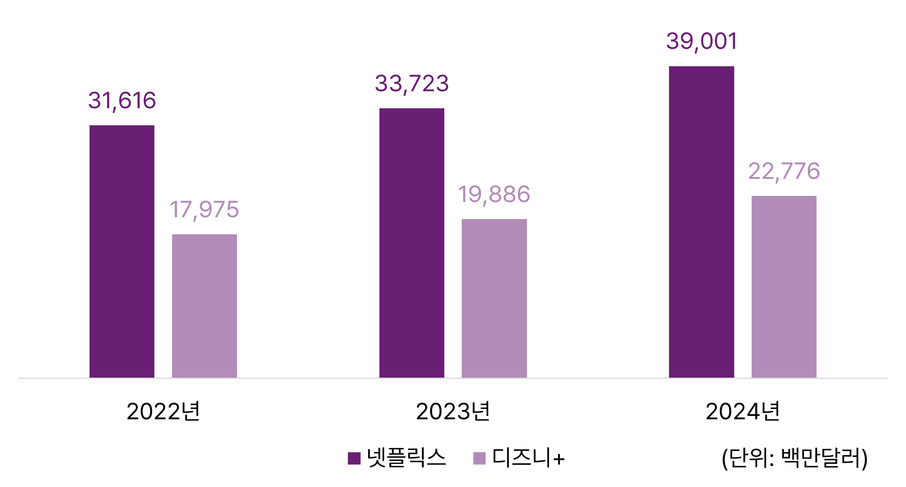
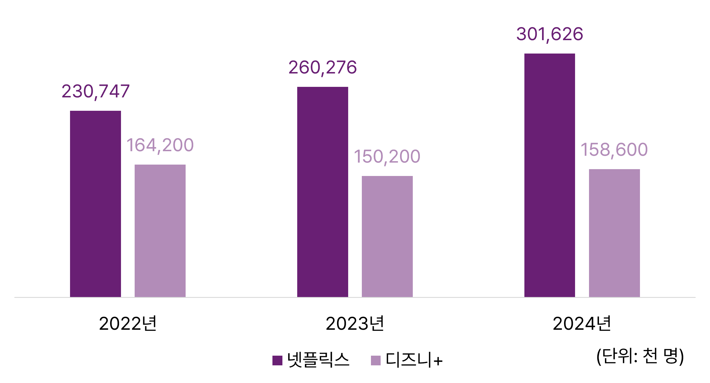
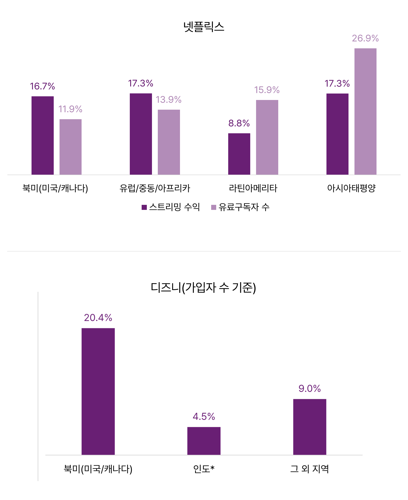

글로벌 동영상 스트리밍 서비스 시장에서 상위를 차지하고 있는 넷플릭스(Netflix)와 디즈니플러스(Disney+)의 연차보고서를 보면, 2024년에 넷플릭스가 390억 달러, 디즈니플러스가 228억 달러로 여전히 넷플릭스의 시장 성과가 높은 것으로 나타났다. 디즈니플러스의 매출액에 훌루(Hulu)의 매출까지 포함되었다는 점을 고려하면 단일 OTT 서비스 사업자로는 넷플릭스가 여전히 독보적이라고 할 수 있다.
[그림 1] 넷플릭스와 디즈니플러스의 최근 3년간 매출액
출처: Netflix(2025). 2024년 Annual Report; Disney(2025). 2024년 Annual Report; Disney(2024). 2023년 Annual Report
* 디즈니플러스 매출액은 디즈니 연차보고서에서 스트리밍 사업(DTC)만 발췌했으며, Hulu 매출까지 포함하고 있음
** 넷플릭스의 결산일은 매년 12월 말일이며, 디즈니플러스의 결산일은 매년 9월 말일을 전후로 하고 있어 회계 시점이 다르다는 점에 유의해야 함
멤버십으로 운영되는 두 플랫폼의 유료 가입자 수를 비교하면 더욱 차이가 두드러진다. 2024년 기준으로 넷플릭스는 190여 개국에서 약 3억 2백만 명의 유료 가입자를 보유하고 있는 것으로 나타났다. 반면 디즈니는 80여 개국에서 약 1억 5천9백만 명의 유료 가입자를 보유하고 있어 넷플릭스의 절반 수준인 것으로 나타났다. 지난 3년간 유로 가입자 수 추이를 보더라도 넷플릭스는 가입자 수가 증가 추세에 있지만 디즈니플러스는 답보 상태에 있음을 알 수 있다.
[그림 2] 넷플릭스와 디즈니플러스의 최근 3년간 유료 가입자 수
출처: Netflix(2025). 2024년 Annual Report; Disney(2025). 2024년 Annual Report; Disney(2024). 2023년 Annual Report
넷플릭스의 지난 3년간 스트리밍 수익과 유료 구독자 수는 전반적으로 모두 증가세를 보이고 있는 것으로 나타났다. 지역별 시장 성과를 보면, 넷플릭스는 유료 구독자 수가 가장 많은 지역은 유럽/중동/아프리카 지역이지만 북미 지역에서 스트리밍 수익을 가장 많이 내는 것으로 나타났다.
[표 1] 넷플릭스의 지역별 스트리밍 수익 및 유료 구독자 수
| 지역 | 성과 지표 | 2022년 | 2023년 | 2024년 |
|---|---|---|---|---|
| 북미 (미국/캐나다) | 스트리밍 수익($) | 14,084,643 | 14,873,783 | 17,359,369 |
| 유료구독자 수(천명) | 74,296 | 80,128 | 89,625 | |
| 유럽/중동/아프리카 | 스트리밍 수익($) | 9,745,015 | 10,556,487 | 12,387,035 |
| 유료구독자 수(천명) | 76,729 | 88,813 | 101,133 | |
| 라틴 아메리카 | 스트리밍 수익($) | 4,069,973 | 4,446,461 | 4,839,816 |
| 유료구독자 수(천명) | 41,699 | 45,997 | 53,327 | |
| 라틴 아메리카 | 스트리밍 수익($) | 3,570,221 | 3,763,727 | 4,414,746 |
| 유료구독자 수(천명) | 38,023 | 45,338 | 57,541 |
반면에 디즈니플러스는 북미에서는 유료 가입자 증가세를 보이고 있으나, 인도 지역에서는 23년부터 전년 대비 50% 이상 가입자가 감소한 후 24년에도 감소세가 이어지는 것으로
나타났다.
인도의 디즈니플러스 핫스타(Disney+ Hotstar) 서비스는 본래 인도의 토착 스트리밍 플랫폼이었던 핫스타를 21세기 폭스(21st Century Fox)가 소유했다가, 디즈니가 폭스를
인수하게 되면서 2020년에 디즈니플러스와 합치게 되었다. 사업 초기였던 2022년 상반기에 가입자를 대거 유치했으나, 2022년 6월에 인도의 국민 스포츠인 크리켓 스트리밍 중계권 입찰에
실패하면서 가입자의 절반가량이 이탈했다. 이로 인해 디즈니플러스는 동남아시아에서의 디즈니플러스 사업 전반에 타격을 입게 되었다. 디즈니는 이를 회복하기 위해 2023년에 2024년부터
2027년까지 크리켓 중계권을 구매하여 ‘ICC 크리켓 월드컵 무료 스트리밍’ 서비스를 제공한다는 계획을 세웠고, 가입자 유입과 수익 전환을 기대했다. 그러나 2024년 9월 28일 기준
인도 지역의 가입자 수를 보면 크리켓 경기 서비스 이후에도 이탈한 가입자를 재유입하지는 못했음을 추측할 수 있다. 한편 디즈니플러스는 북미와 인도 이외의 지역 가입자 수도 큰 증가세 없이
제자리에 머물러 있다.
[표 2] 넷플릭스의 지역별 스트리밍 수익 및 유료 구독자 수
| 지역 | 2022년(10월 1일) | 2023년(9월 30일) | 2024년(9월 28일) |
|---|---|---|---|
| 북미(미국/캐나다) | 46.4 | 46.5 | 56 |
| 인도 | 61.3 | 37.6 | 35.9 |
| 그 외 지역 | 56.5 | 66.1 | 66.7 |
| 총합 | 164.2 | 150.2 | 158.6 |
23년 대비 24년 성장률을 보면, 넷플릭스의 경우 아시아 태평양 지역의 성장세가 크다. 스트리밍 수익의 성장세는 북미보다도 높으며, 유료 구독자 수의 성장률은 26.9%로 다른 지역보다 월등하다. 반면에 디즈니플러스는 북미 의존도가 절대적으로 높다. 현지화에 인색하다는 평을 받고 있는 디즈니플러스 입장에서는 북미 외 지역에 대한 넷플릭스와 차별화된 경쟁 우위 전략이 필요하다고 할 수 있다.
[그림 3] 넷플릭스와 디즈니플러스의 지역별 23년 대비 24년 성장률

영상콘텐츠 유통 시장에 구독모델이라는 카드를 가지고 등장했던 넷플릭스는 결국 수익 모델의 전환을 위해 2022년에 광고를 도입했다. 2025년 넷플릭스의 연차보고서에서도 자사가 추구하는
비즈니스 모델로 광고 기반 구독 플랜을 포함한 다양한 가격 플랜을 제공하여 다양한 소비자 니즈를 충족할 계획임을 밝히고 있으며, 광고 전략에 대한 다각적인 고민을 포함하고 있다. 특히 자사
서비스 내 광고 제공 경험과 운영 이력의 한계를 지적하며 리스크 요인들을 인지하고 있다.
넷플릭스는 현재 미국과 한국을 비롯하여 12개 국가에서 ‘광고 있는 스탠다드’ 요금제를 운영하고 있다. 그 외 국가에서는 ‘베이식’, ‘광고 없는 스탠다드’, ‘프리미엄’을 운영하고 있다.
프랑스에서는 1대 기기에서만 시청이 가능한 ‘에센셜’ 요금제를 특화하여 운영 중이며, 인도네시아에서는 ‘모바일’ 전용 요금제를 추가로 운영하고 있다.
국가별 요금제를 보면 인도네시아의 ‘모바일’ 전용 요금제가 월 기준 3.44 달러로 가장 저렴하며, 다음으로 한국의 ‘광고 있는 스탠다드’ 요금제가 약 3.77 달러로 저렴하다. 반면에
북미와 유럽은 ‘광고 있는 스탠다드’ 요금이 월 기준 7~8 달러 사이로 한국의 2배 정도다. 싱가포르와 대만은 동시 시청 1대가 가능한 ‘베이식’ 모델이 약 10 달러다.
넷플릭스는 2025년 1분기 주주서한을 통해 수익 창출 개선과 투자 촉진을 위해 가격 개선을 계획하고 있다고 밝히고 있다. 실제로 미국, 영국, 아르헨티나 등에서 먼저 가격 조정되고 이후
프랑스에서도 가격을 조정하였다.
광고 역시 지속적으로 대상 국가를 확대하고 광고 회원 수를 늘린다는 계획이다. 특히 넷플릭스는 2025년의 주요 목표를 광고주 역량 강화로 잡고, 2025년 4월 1일, 자사 퍼스트 파티
광고 기술 플랫폼인 ‘Netflix Ads Suite’를 미국에서 출시했다. 향후 몇 달 안에 ‘Netflix Ads Suite’를 나머지 광고 시장에도 출시할 예정이라고 밝히고
있다.
넷플릭스가 이와 같은 적극적인 광고 확대 전략을 통해 과연 수익 개선을 효율적으로 꾀할 수 있을지, 그리고 이러한 전략이 글로벌 영상물 시장에 어떠한 도돌이표로 돌아올지 주목해 볼 일이다.
[표 3] 넷플릭스의 국가별 요금제 차이 (2025년 4월 기준)
| 국가 | 요금제 | 월 요금 (USD) | 광고 포함 여부 | 비고 |
|---|---|---|---|---|
| 미국 | 스탠다드 | $7.99 | O | 동시 시청 2대 |
| 스탠다드 | $17.99 | X | 동시 시청 2대 | |
| 프리미엄 | $24.99 | X | 동시 시청 4대(4K) | |
| 영국 | 스탠다드 | 약 $7.50 | O | 동시 시청 1대 |
| 스탠다드 | 약 $16.30 | X | 동시 시청 2대 | |
| 프리미엄 | 약 $23.80 | X | 동시 시청 4대(4K) | |
| 프랑스 | 스탠다드 | 약 $6.40 | O | 동시 시청 2대 |
| 에센셜 | 약 $9.60 | X | 1대 기기에서만 시청 가능 | |
| 스탠다드 | 약 $14.45 | X | 동시 시청 2대 | |
| 프리미엄 | 약 $21.40 | X | 동시 시청 4대(4K) | |
| 일본 | 스탠다드 | 약 $5.64 | O | 동시 시청 2대 |
| 스탠다드 | 약 $10.08 | X | 동시 시청 2대 | |
| 프리미엄 | 약 $14.52 | X | 동시 시청 4대(4K) | |
| 한국 | 스탠다드 | 약 $3.77 | O | 동시 시청 2대 |
한편 디즈니플러스의 국가별 요금제는 현재 47개국에서 광고없이 제공되는 월별 스탠다드 요금제 기준으로 살펴보았다. 가장 요금제가 저렴한 국가는 4.34 달러인 터키이며, 한국은 6.76 달러 정도이다. 미국은 9.99 달러다. 디즈니플러스 요금제가 가장 높은 국가는 스위스로 16.89 달러로 나타났다. 넷플릭스가 가격 인상을 전략적으로 고민하고 있는 것과 달리 디즈니플러스의 매출은 24년 연차보고서에 의하면 광고에 대한 노출 증가로 인한 광고 수익 증가에 따른 것이라고 분석하고 있다. 광고 노출 증가로 수익이 26% 증가했지만, 요금 인하로 인한 12% 감소로 일부 상쇄되었다고 분석하고 있다.
[그림 4] 디즈니플러스 국가별 월평균 요금, 2025년 3월 기준 (단위: USD)

(출처: Matt Horne(2025. 3. 27). How much does Disney Plus cost around the world?)
가격 차별화 전략은 시장별로 상이한 지불의사를 가지고 있는 수요자를 대상으로 가격을 설정함으로써 사업자의 이익을 극대화할 수 있다는 측면에서 매력적이다. 글로벌 스트리밍 시장에서 독보적인
자리를 차지하고 있지만 태생적으로 구독모델이라는 하나의 수익모델을 가지고 출발했던 넷플릭스는 190여 개 국가를 대상으로 오리지널 콘텐츠와 요금제 차별화를 통해 가입자를 유입해 왔다. 그러나
가입자 유입이 한계에 이르고 스트리밍 서비스 사업이 경쟁적으로 확장되면서 결국 ‘광고’ 시장에 뛰어들었다. 넷플릭스의 24년 연차보고서를 보면 후발 주자로서 선점자를 따라잡기 위해 광고
기술에 주력하려는 강력한 의지가 담겨있다. 과연 이와 같은 수익모델의 확장이 글로벌 영상 콘텐츠의 확장으로 슬기롭게 이어질 수 있을지 주목해야 할 것이다.
반면 디즈니플러스의 국가별 가격 전략의 1차적 목적은 가입자 유입 확대에 있는 것으로 보인다. 인도 핫스타 사례에서 보듯이 무료 스트리밍으로 국가 이벤트를 볼 수 있도록 제공하면서도 시장
회복에 대한 기대가 있는 것은 광고 수익을 기대하기 때문이다. 이와 같은 글로벌 OTT 서비스 사업자의 가격 전략은 콘텐츠 수급의 문제와 직결된다는 점에서 중요하다. 최근 국내외 OTT
사업자들이 가입자 유입을 위해 스포츠 중계권 독점에 주력하고 있다. 그러나 비싼 중계권 구입의 대가를 결국 누가 지불하게 될지, 유료 가입을 할 수 없는 이용자의 시청권은 어떻게 확보할 수
있을지, 콘텐츠 제작에 대한 투자 환경에 미치는 영향과 그로 인한 콘텐츠 제작 시장의 다양성 확보는 이처럼 치열한 경쟁환경에서 어떻게 담보할 수 있을지 등 여러 가지 각도에서 이들의 가격
전략을 들여다봐야 할 때이다.
- Disney(2025). 2024년 Annual Report
- Disney(2024). 2023년 Annual Report
- Matt Horne(2025. 3. 27). How much does Disney Plus cost around the world? Android Authority
- Netflix(2025). 2024년 Annual Report
- https://www.usatoday.com/story/entertainment/television/2025/01/22/netflix-price-increase-2025-how-much-cost/77885489007/
- https://www.theguardian.com/media/2025/feb/07/netflix-increase-uk-subscription-prices-despite-record-audience
- https://www.sharesub.com/cms/en/netflix-raises-subscription-prices-overview-of-new-rates-in-france/
- https://www.singsaver.com.sg/personal-loan/blog/how-much-does-netflix-cost
- https://focustaiwan.tw/culture/202411080023
- https://www.detik.com/sulsel/bisnis/d-7164842/cara-daftar-netflix-di-berbagai-perangkat-beserta-jenis-dan-harga-paketnya?utm_source=chatgpt.com